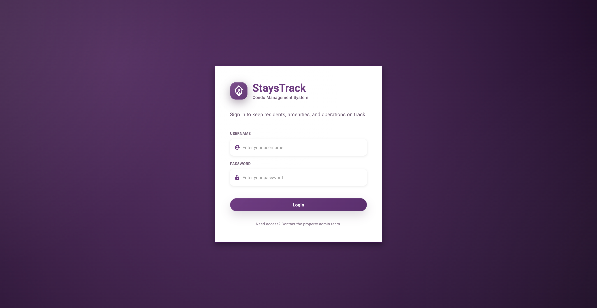
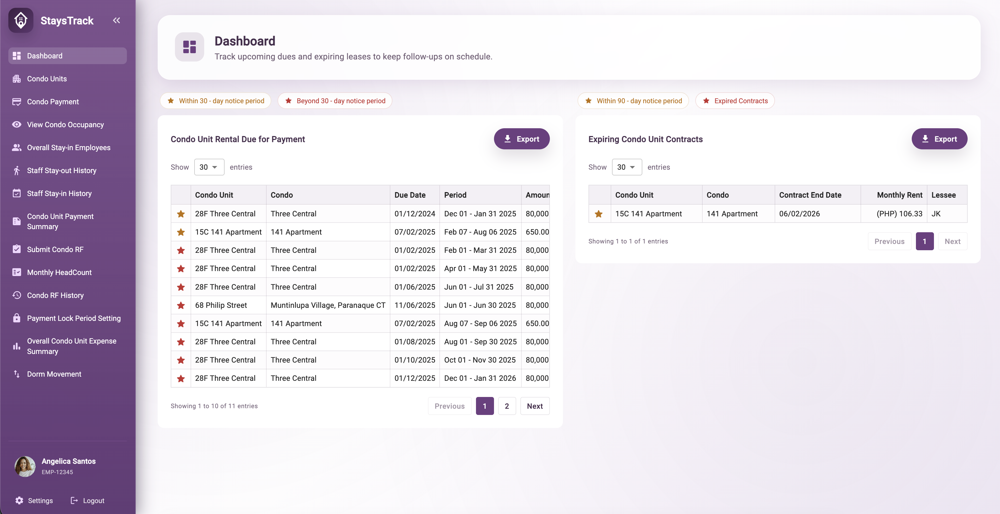

StaysTrack Condo Management System
A property management platform for condominium administrators handling condo unit rental dues, expiring contracts, occupancy tracking, payment submissions, and staff movement in one centralized system.
Property management without the paper trail
Condo administrators were tracking rental dues, lease contracts, and staff movements across disconnected spreadsheets and paper records. There was no way to quickly see which units were overdue, which contracts were expiring, or how many staff were on-site.
I designed StaysTrack as a centralized platform that gives property managers real-time visibility into every aspect of condo operations, with clean data tables, smart alerts, and a simple approval flow.

Login centered card on a deep purple background with clean credential form

Dashboard side-by-side tables for rental dues and expiring contracts, with priority flags, date ranges, and export controls for property managers
What I designed
Admin Dashboard
At-a-glance tables for rental dues within 20 and 30-day notice periods, expiring contracts, and export capabilities keeping admins ahead of deadlines.
Condo Units
Unit directory with occupancy status, tenant details, lease period, and monthly rent giving managers a full view of the property portfolio.
Condo Payment
Payment submission and tracking per unit with period coverage, amount records, and overdue flagging to reduce missed collections.
Occupancy & Staff Tracking
Overall condo occupancy view, staff stay-in and stay-out history giving property managers visibility into on-site headcount at any time.
RF & Payment Summaries
Condo RF submission forms and monthly payment summary reports structured for audit and accounting review.
Payment Lock Period
Admin-controlled payment lock settings to close off periods for reconciliation preventing late or duplicate entries after cutoff.
Fewer missed dues, faster property decisions
StaysTrack replaced spreadsheet chaos with a structured, real-time platform. Admins can now instantly see which units are overdue, which contracts are expiring, and how many staff are on-site without digging through files. The export and lock features gave the finance team cleaner data for monthly reconciliation.